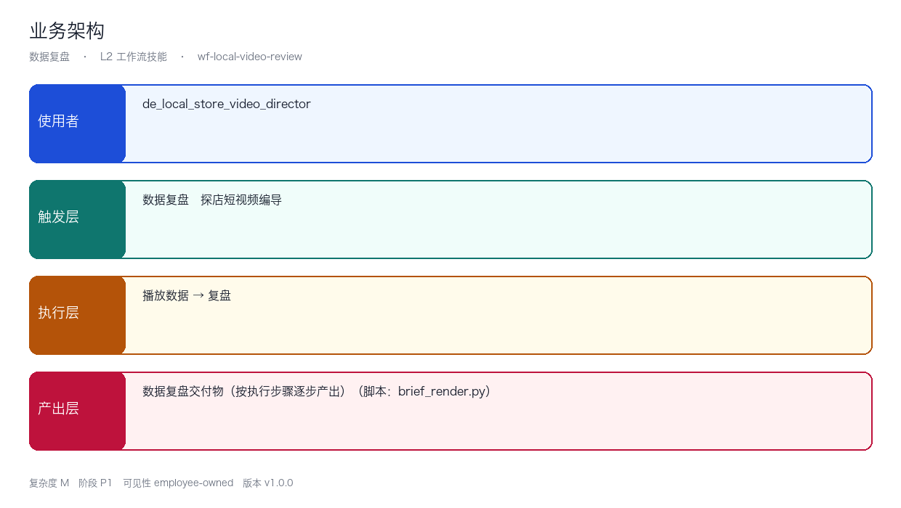
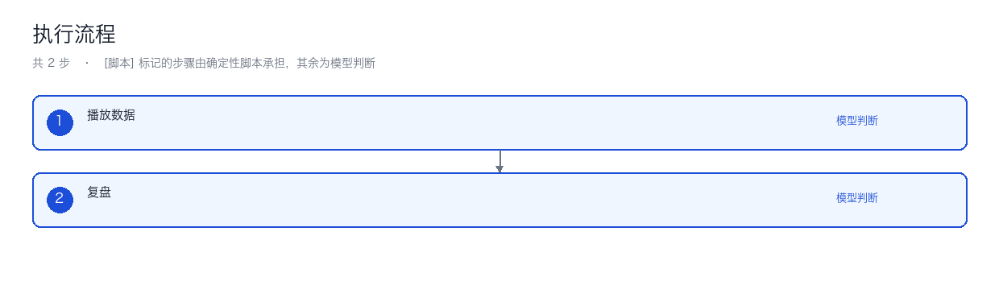
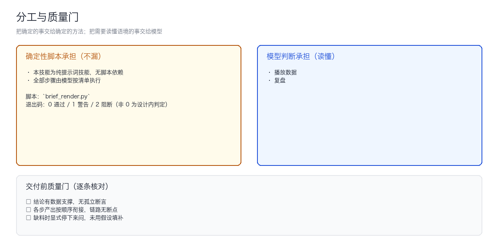

包含架构图、流程图的 Mermaid 源码（方便你改），以及二次开发指南。

| 层 | 内容 |
|---|---|
| 使用者 | de_local_store_video_director |
| 触发层 | 数据复盘、探店短视频编导 |
| 执行层 | 2 步：播放数据 … |
| 产出层 | 数据复盘交付物（按执行步骤逐步产出） |

graph TD
START([START]) --> n0["1. 播放数据"]
n0 --> n1["2. 复盘"]
n1 --> END([END])
classDef script fill:#fffbeb,stroke:#b45309,color:#b45309
classDef model fill:#eff6ff,stroke:#1d4ed8,color:#1d4ed8
class n0,n1 model| # | 步骤 | 承担者 |
|---|---|---|
| 01 | 播放数据 | 模型判断 |
| 02 | 复盘 | 模型判断 |
「承担者」的判据是这个环节是不是确定性的：机械、可复现的交脚本，需要读懂语境（语气、潜台词、平台调性）的交模型——写成规则只会更不可靠。
每一步的输入、产出与失败处理，见SKILL.md的「执行步骤」对应小节。

分工原则：把确定的事交给确定的方法，把需要读懂语境的事交给模型。
| 环节 | 承担者 | 为什么 |
|---|---|---|
| 机械处理（扫描、渲染、打标、计算） | 脚本 | 可复现、可测试、零成本、不怕漏 |
| 语境判断（反讽、潜台词、平台调性） | 模型 | 规则写法只会更不可靠 |
| 最终交付判定 | 人 | 合规与承诺不能由机器签字 |
输入
| 字段 | 必填 | 说明 |
|---|---|---|
| 流程起始材料（见执行步骤第 1 步） | ✅ | — |
| 用户身份与目标渠道/平台 | ✅ | — |
| 历史产出 | ⬜ | — |
| 账号人设 | ⬜ | — |
| 渠道规则 | ⬜ | — |
| 上一周期数据 | ⬜ | — |
输出
# 数据复盘 — 交付物
> 所属员工：探店短视频编导 触发：定时 阶段：P1
1. **播放数据**（产出：战报 / 复盘长文生成）
2. **复盘**（产出：本步结论）
## 结论与风险
## 用了哪条降级路径（若发生）SKILL.md 的 ## 执行步骤 里追加一步，写明输入、产出、失败怎么办scripts/，并在步骤前加 [脚本] 标记README.md 的输出契约python3 tests/run.py
5.2 换掉/新增脚本
脚本约定三条（保持不变才能被安全替换）：
- 零第三方依赖，只用 Python 标准库
- 文件/stdin 进，stdout 出，不用交互式输入
- 退出码语义：0 通过 / 1 警告 / 2 阻断
5.3 移植到新平台
本技能正文里没有出现任何平台名，平台差异全部下沉到平台安装章节。移植时只改安装说明，不改执行步骤。
新增平台时请把差异写进 docs/使用手册.md 的「各平台差异」表，不要写进 SKILL.md。
六、文件职责一览
文件 职责 依赖模型 SKILL.md技能定义与执行步骤 — scripts/check_env.py环境探测与降级 — ../../tools/brief_render.py确定性执行逻辑 否 docs/*交付文档 — examples/*真实运行夹具与输出 —